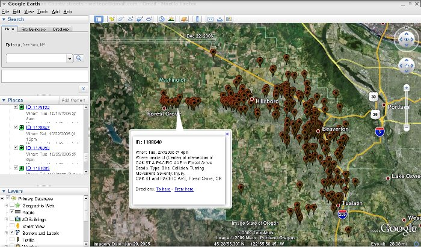

Creating Google Earth maps of bicycle crashes in Washington County
Peter W | June 2009 | CS 457 @ PSUOregon is nationally known for its efforts to promote bicycling & walking. In 1971 the state passed a bill requiring that all new or reconstructed roads have bike lanes, and that the State and local governments spend at least 1% of transportation funds on bicycle and pedestrian projects. In 2005 Oregon put an emphasis on biking and walking at a young age with the announcement of $5 million for the Safe Routes To School program which gives grants to schools and local governments to create encouragement and educational programs or to improve the safety of transportation infrastructure near schools. And in late 2008, the Oregon Tourism Commission announced it was beginning work on a new website devoted to bicycle touring in the state.
However, despite (or because of?) pouring billions—if not trillions—of dollars on our nation’s transportation infrastructure, vehicle crashes are still a leading cause of death in the US. Every year, over 40,000 Americans are killed in automobile crashes.1 The Federal Highway Administration (FWA) reports that
“bicyclists and pedestrians remain over-represented in crash statistics, accounting for almost 15 percent of all fatalities but only 7 percent of trips and an even smaller percentage of total miles traveled.”2
Citing figures from the FWA, the League of American Bicyclists estimates that the sum of the economic costs of every person injured or killed since 2000 is $3.1 and $2.1 billion, respectively.3
Unfortunately, despite the high costs of a dangerous transportation system, in terms of both dollars and lives, politicians and transportation agencies often prioritize projects which increase capacity over those that improve safety. This is even the case in Oregon, as evidenced by the recent passage of HB 2001, the “Jobs and Transportation Act”. The bill specifically earmarks over $840 million of the total $1 billion to be spent on highway projects, and legislates that two-thirds of the money will go towards building new highway capacity and interchanges.
Why is roadway capacity so often prioritized over safety? We believe it is in large part due to the fact that the average person can much more easily visualize and quantify traffic congestion then they can for safety problems. It is easy to see a traffic jam. It is difficult to see how frequent and widespread crashes are. You can measure how long you sit in traffic, but if can’t even visualize the broad extent of safety issues, how can you possibly quantify them or their effects?
But what if these everyday people could visualize and quantify traffic crashes and their aftermath? If the devastation and destruction could be made tangible, would politicians be more likely to appreciate the severity of the problem and the need for action? This brings us to our primary objective.
The objective of this project is to make a first pass towards that ideal solution to the problem of visualizing and quantifying crashes, and aims to address these specific questions:
To proceed towards such a tool, we will use the powerful programming language Haskell, the widely used and user friendly geographic visualization tool, Google Earth, and a dataset of crash records from the Oregon Department of Transportation (ODOT). Our goal will be to read in the set of crashes and output a file which can be viewed in Google Earth. Using Google Earth, users will be able to see the location of every crash, and when they select a crash, detailed information about it will be displayed. Each of these crashes will be tagged with a timestamp as well, so the user may perform time based actions, such as taking a tour (in chronological order) of all crashes, or asking Google Earth to only show crashes during a specified time period.
In the next section, we will discuss the data and formats involved.
KML is an XML data format for storing geographic information. Originally a proprietary format when Google Earth was the ‘Keyhole’ product (before Google acquired it), it is now an open standard. According to the Google online KML reference, “KML is an open standard officially named the OpenGIS® KML Encoding Standard (OGC KML). It is maintained by the Open Geospatial Consortium, Inc. (OGC)”.4
Google’s online KML Reference is the best place to discover all the details of the format, but we’ll just go over the basics here:
A KML file begins with: <kml xmlns=\"http://www.opengis.net/kml/2.2\"> and ends with </kml>.
The file can contain Placemarks (geographic locations), Folders, and other elements. A Placemark has a name, address, description, and may have a timestamp.
Here is an example of a simple KML file which contains one placemark for PSU, is stored in the “Oregon Universities” folder, and has a timestamp for the time the school first opened:
<kml xmlns="http://www.opengis.net/kml/2.2">
<Folder>
<name>Oregon Universities</name>
<Placemark>
<name>Portland State University</name>
<address>1825 SW Broadway, Portland, OR 97201</address>
<description>PSU is Oregon's largest university.
It was founded in 1946, and lets say it opened at 9am on September 23rd.
</description>
<TimeStamp><when>1946-09-23T09:00:00-08:00</when></TimeStamp>
</Placemark>
</Folder>
</kml>
The Oregon Department of Transportation (ODOT) Crash Analysis and Reporting Unit maintains a set of records of all reported traffic crashes going back at least 10 years. Upon request, they provided two Comma Separated Value (CSV) exports: one of all the crashes involving bicycles, and the other for crashes involving pedestrians. To reduce the amount of data involved for the first version of the application, ODOT exported only crashes occuring within Washington County (the only significance of this particular location is that it is where this author lives).
The CSV format is a simple text format where records are separated by newline characters and fields within records are just character strings separated by commas.
The full crash record set is quite complicated. Each record has 98 fields, which cover everything about the crash: what, when, where, who, why, and how. For example, it includes information about the types of vehicles involved, the number of people involved, how the crash happened (head-on vs angle movement), roadway information such as surface condition, speed limit, number of lanes, etc. Eventually, this application can be extended to deal with most of that data, but for the purposes of development, the records were slimmed down to just these basic 14 fields, shown below along with a short description:
| Field | Descripton |
|---|---|
| Crash ID | |
| Unique identifier for this crash | |
| Crash Month | |
| 01 = Jan, 12 = Dec, etc. | |
| Crash Day | |
| 01–31 | |
| Crash Year | |
| YYYY format. | |
| Week Day Code | |
| 1=Sun 7=Sat [redundant, but convenient] | |
| Crash Hour | |
| 00 = 12am–12:59pm. 23 = 11pm–11:59pm. | |
| 24: not used. 99: unknown time. | |
| City | |
| Unique city identifier, | |
| or blank if outside city limits | |
| Street # | |
| Street on which crash occured. | |
| When combined with city ID, | |
| we can lookup a street name | |
| Nearest Intersecting Street | |
| same format at Street # | |
| Distance From Intersection | |
| blank: unknown | |
| 0000: in intersection | |
| 0001–9998: dist. in feet | |
| 9999: over 9999 feet | |
| Direction From Intersection | |
| 0: Unknown | |
| 1: North | |
| 2: Northeast | |
| 3: East | |
| 4: Southeast | |
| 5: South | |
| 6: Southwest | |
| 7: West | |
| 8: Northwest | |
| 9: Center of the Intersection | |
| Crash Type | |
| 3: pedestrian | |
| 6:bike | |
| Collision Type | |
| 1: Angle | |
| 2: Head-On | |
| 3: Rear-End | |
| 4: Sideswipe-meeting | |
| 5: Sideswipe-overtaking | |
| 6: Turning Movement | |
| 7: Parking Movement | |
| 8: Non-collision | |
| 0: Fixed- or Other- object | |
| -: Backing | |
| &: Miscellaneous | |
| Crash Severity | |
| 2: fatal | |
| 4: nonfatal |
A secondary file, streets.csv, was supplied by ODOT which we use as a lookup table for the street and city IDs. The file is a CSV file where each record has the following four fields: CountyID (e.g., “34” for Washington County), StreetID, StreetName, CityID, CityName.
A number of simplifying assumptions were made:
The following reference files contain extensive documentation about the ODOT files:
Diving straight into creating code to parse the ODOT crash data seemed daunting, so the tasks of reading in CSV files and writing to KML files were tackled first.
To read the CSV file, a small amount of code was copied from the Real World Haskell book. 5
Here’s part of that code:
import Text.ParserCombinators.Parsec
csvFile = endBy line eol
line = sepBy cell (char ',')
cell = quotedCell <|> many (noneOf ",\n\r")
The function ‘csvFile’ is most useful to us. It is of type GenParser Char st [[String]]. This will be passed to Parsec’s parse function, and will parse a list of characters and return a list of lists of strings. Some type synonmys that we add to the CSV.hs file make it easier to get our head around that return type:
type CSV = [Record]
type Record = [Field]
type Field = String
That is, when the input string is parsed, a CSV is returned. A CSV represents a CSV file, whic is a list of records, where each record (or line) is a list of fields. Each field is simply a string (and fields are separated by commas, which we don’t need to worry about any more since the parser takes care of that).
To use the CSV code in our application, we store it in CSV.hs and export it as part of a module definition which begins at the top of that file:
module CSV (csvFile,
parse,
CSV,
Record,
Field
) where
To try out this code, we create a sample CSV file, sample.csv:
"1","bike","7105 NE Rocky Brook St","Hillsboro","OR","97124"
"2","ped","18880 SW Hart Rd","Aloha","OR","97007"
"3","bike","1831 SW Park Ave #208","Portland","OR","97201"
(Note that the records are much simpler than the full ODOT data.)
An early version of our code simply calls the parser and prints the records in a human readable format:
main =
do c <- getContents
case parse csvFile "(stdin)" c of
Left e -> do putStrLn "Error parsing input:"
print e
Right r -> do putStrLn (csvToText r)
-- Helper function to convert CSV to output string.
csvToText :: [Record] -> String
csvToText c = unlines $ map stringFromRecord c
-- Helper function to convert 1 line of CSV file to a string.
stringFromRecord :: Record -> String
stringFromRecord r = "Id: " ++ (r !! 0) ++
"\n\tType: " ++ (r !! 1) ++
"\n\tAddress: " ++ (r !! 2) ++
"\n\tCity: " ++ (r !! 3) ++
"\n\tState: " ++ (r !! 4) ++
"\n\tZip: " ++ (r !! 5) ++ "\n"
Notice the case statement in the main function. The expression evaluated by the case statement is the call to parse. The full type of parse is:
parse :: GenParser tok () a -> SourceName -> [tok] -> Either ParseError a
The first argument to parse is the csvFile parser. The SourceName is "(stdin)" (this is only used for error output messages), and c::[Char] is the sequence of characters read from stdin by getContents. The fact that parse returns an Either type necessitates the use of the case statement. Either is a ‘disjoint union’, and in our code this means the value can either be a ParseError or a [[String]]. We pattern match using Either’s two constructors, Left and Right, to determine which action should be taken; if the parsing results in an error, we print it, otherwise we use csvToText to convert to human friendly text and print that.
Creating the KML output at this point is simple.
We create a KML.hs file to hold a new module, KML. This module consists of two simple strings, kmlHeader and kmlFooter, an algebraic datatype called Placemark (with fields for name, address, description, etc), a function xmlify which converts strings to XML friendly strings (e.g. replacing & with &), and a means of converting the Placemark to a string.
To turn a Placemark into a String, we instantiate the Show class and include the KML required to create a placemark:
instance Show Placemark where
show (Placemark name address description timestamp) =
"\t<Placemark>\n" ++
"\t\t<name>" ++ name ++ "</name>\n" ++
"\t\t<address>" ++ address ++ "</address>\n" ++
"\t\t<description>" ++ description ++ "</description>\n" ++
"\t\t<TimeStamp><when>" ++ timestamp ++ "</when></TimeStamp>\n" ++
"\t</Placemark>\n"
Now to print the KML file, we rewrite the code to use the show function and a new conversion function, placemarkFromRecord:: Record -> Placemark:
main =
do c <- getContents
case parse csvFile "(stdin)" c of
Left e -> do putStrLn "Error parsing input:"
print e
Right r -> do
putStrLn kmlHeader
putStrLn (concatMap (show . placemarkFromRecord) r)
putStrLn kmlFooter
Note the use of a couple more interesting features. First we use function composition with show . placemarkFromRecord to create a function which first converts a record to a placemark and then converts the placemark to a string. This composition is passed as the function to concatMap, which maps it to all the elements of r (records) and then, since the result of that operation is a list of strings, concatonates those strings together.
Now we can convert a simple list of crashes to KML. We validate the KML file with the application xmllint and check it out in Google Earth. With that working, we move on to the real crash file.
Ultimately, what we want to do is convert a CSV file with a list of crashes into a KML file full of placemarks. We’ve already got a Placemark type, so now we need to define a Crash type (and later we’ll create a way to convert from a Crash to a Placemark). We create an ODOTCrash module which defines Crash related data types. Since there are a lot of fields, we let the Crash type be a logical grouping of those fields:
type CrashID = String
data Crash = Crash
{
cid::CrashID,
when::DateTime,
location :: Location,
details :: Details --crash type, severity, etc.
}
We won’t go into everything here, but another interesting data type to look at is Day, which is used as a fiedl in DateTime.
data Day = Sun | Mon | Tue | Wed | Thu | Fri | Sat deriving (Show, Enum, Eq)
Note how it derives a number of standard classes (Show, Enum, and Eq). Deriving Show means there will be a default show function (which will result in strings like “Sun”, “Mon”, etc). Deriving the Enum class is helpful too; the ODOT crash format stores Days as numbers 1 through 7, and we can easily convert to these Days using the toEnum function. We wrap that in another function which deals with the difference between 0-based Haskell enums and 1-based ODOT days:
toDay :: Int -> Day
toDay n = toEnum (n-1)::Day
To convert from CSV to a list of crashes, we need a function which takes a Record and returns a Crash. The function crashFromRecord does just that. It creates a Crash by supplying the crash id (field 0 of each record), along with the DateTime, Location, and Details of the crash. These other data types are constructed by similar functions which are passed just the elements of the list necessary (dateFromArray, etc). Note that crashFromRecord also takes a [Street]. This is because the crashes in the CSV file have street id #s, and we want the Crash’s Location to contain the actual street names (so [Street] is a lookup table).
crashFromRecord and dateFromArray are shown below:
crashFromRecord :: [Street] -> Record -> Crash
crashFromRecord streets r = Crash (r!!0)
(dateFromArray (arrRange r (1,5)))
(locationFromArray streets (arrRange r (6,10)))
(detailsFromArray (arrRange r (11,13)))
dateFromArray :: [String] -> DateTime
dateFromArray a = DateTime (a!!0) (a!!1) (a!!2)
(toDay (read (a!!3)::Int)) (Hour (read (a!!4)::Int))
The function arrRange is just a simple function which returns the range of elements between the given start and end index (inclusively):
arrRange :: [a] -> (Int, Int) -> [a]
arrRange as (r1, r2) = take (r2-r1+1) (drop r1 as)
We’ll talk more about the [Street] passed to crashFromRecord next.
In contrast to crashFromRecord, the function that returns a Street is much simpler:
streetFromRecord :: Record -> Street
streetFromRecord r = Street (r!!0) (r!!1) (r!!2) (r!!3) (r!!4)
Here’s the definition of Street. It is just a bunch of strings, in the same order as they appear in the CSV file.
data Street = Street { county :: String,
streetid :: StreetID, --StreetID = String
streetname :: String,
cityid :: CityID, --CityID = String
cityname :: String
} deriving Show
The interesting thing is that the Location within a Crash stores a city name and a a couple street names (the street where the crash happened, and the nearest intersecting street), but the Crash CSV file only includes street and city ids. So to parse a crash, we first read in the streets file and create the streets::[Street]. Then streets is passed to crashFromRecord, which passes it to locationFromArray, which applies the functions findCityName and findStreetName.
To find the street name, we use a list comprehension (in a helper function) that finds all streets with the specified city and street id:
-- find a street given a city and street id
-- find all streets matching..
findStreetArr :: [Street] -> CityID -> StreetID -> [Street]
findStreetArr streets cid sid = [ s | s <- streets,
cityid s == cid,
streetid s == (padStreet sid) ]
The list of streets returned should always only have one element. We use pattern matching to ensure this:
-- return name of street specified by CityID, StreetID
findStreetName :: [Street] -> CityID -> StreetID -> String
findStreetName streets cid sid =
case findStreetArr streets cid sid of
[] -> error ("no street found for city: " ++ cid ++ ", street: " ++ sid)
(x:y:zs) -> error "multiple streets found in street database for city: " ++
cid ++ ", street: " ++ sid
(s:ss) -> streetname s
For completeness, here is locationFromArray6:
--parse the crash location
--streets is the street database that we'll use to find the
--name of cities and streets.
locationFromArray :: [Street] -> [String] -> Location
locationFromArray streets a = Location (findCityName streets (a!!0))
(findStreetName streets (a!!0) (a!!1))
(findStreetName streets (a!!0) (a!!2))
(parseDistance (a!!3))
(toDirection (read (a!!4)::Int))
Google Earth has a feature that allows you to take a ‘tour’ of placemarks in a folder, jumping around from one to another. If we sort the list of crashes chronologically, it would make such a tour much more useful.
The List module’s sort function is a great help for sorting things. However, those things have to be sortable. Meaning, they have to be a member of the Ord class, a class for ordered datatypes. We instantiate that class by providing a minimally complete definition: we implement just the function <=.
We say that crash1 is “less than” crash2 if crash1 happened before crash2 (using the DateTime’s <= operator):
instance Ord Crash where
(<=) c1 c2 = (when c1) <= (when c2)
We also implement this function for DateTime, and we do that by again passing the comparison off to another function (which you can find in the source).
instance Ord DateTime where
(<=) d1 d2 =
cmp (dateToTuple d1) (dateToTuple d2)
Having implemented these, now we can sort:
crashes :: [Crash]
sortedcrashes = sort crashes
Another interesting thing that we can implement is filtering. We’ll make use of the filter function because we only want crashes that are either a distance 0 from intersections are in the center of them. These are the only crashes we know how to map at this point.
To filter the list of crashes, we create the following function which compares the distance field of the crash location with 0, or compares the direction with Center.
isIntersectionCrash :: Crash -> Bool
isIntersectionCrash crash = distance (location crash) == Distance 0 ||
direction (location crash) == Center
Although the crash mapper doesn’t do everything that it was originally intended to do, I’m quite happy with the result. In its current form, it will take a list of crashes in ODOT’s CSV format and create a KML file which can be opened in Google Earth. Each crash (Placemark) includes a timestamp, and the set of placemarks in the KML file is sorted by date. This allows the user to use tools included in Google Earth to view just the crashes within a specified time frame and to take a “tour”, in chronological order, of all the crashes over the last ten years.
By creating this map, users should be able to look at an area they are interested in and examine it for trends. For instance, by zooming in on downtown Beaverton you can see that there have been a high number of crashes along Farmington road and 1st Ave, which is scary considering that is where Beaverton High School is located.
Here is a screenshot of Google Earth, showing all bike crashes in Washington County over the last ~ 10 years: 
As cool as it is, there is a long list of improvements that could be made to the program:
All of the source code is available here.
source: http://www-nrd.nhtsa.dot.gov/Pubs/810936.PDF ↩
source: http://www.fhwa.dot.gov/environment/bikeped/study.htm#s3 ↩
source: http://www.bikeleague.org/media/facts/#crash_cost ↩
source: http://code.google.com/apis/kml/documentation/kmlreference.html ↩
Full code is in file ch16/csv9.hs from Chapter 16, Using Parsec. ↩
we’re really talking about lists, so this should actually be called locationFromList. ↩